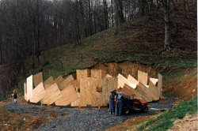

|
42 Foot Plydome |
This dome was meant to be a warehouse, and a copy of the dome on the front page of the plydome patent. I thought copying Bucky's dome would assure me of a successful building. The Dymaxion World of Buckminster Fuller gave the dimensions of the 6v plydome as 42 ft. in diameter. In fact the dome in the pictures was 39 ft. in diameter. The difference made the holes in my dome somewhat large in comparison to Bucky's. This affects the stiffness and tightness. Since all of my domes had been much smaller than this,I was clearly out of my depth. My wife and I had left Vermont, and after camping for a few months had been invited to live at a new age farm in the NW corner of North Carolina, where I built domes in return for a place to live. They needed a warehouse, because the three bay garage was full of things. The owners of the farm, Karl and Kiiri Adam, found the photos of my experimental domes convincing. I told them I could build a 42 ft. round warehouse with 135 sheets of 1/4" plywood,and ten sheets of polycarbonate, and they wanted to move on it right away. Cynthia was anxious. We had just arrived in a somewhat mysterious place, and I was committing to what seemed to her a long term project. I was being offered an opportunity I could not resist. To add to the confusion, Kiiri insisted that a cowbarn with a rectangular floor plan be built before the warehouse. My experimental domes back in Vermont had all gone together quickly. I was confident we would build the 28 ft. x 64 ft. pole barn, which was shaped like a flying loaf of bread, in a few weeks. Earl, who lived there, was an experienced union builder who was interested in the plydomes. He designed the base, a sturdy frame of heavy locust logs he and I cut down and brought down from he ridge. We had a tractor and dump truck. The site work and frame moved along well, but assembling the stretch dome was slow- we were starting the plywood 8 1/2 feet off the ground. After struggling for at least a week it was determined a temporary floor was needed. Once that was done, and we started putting together the middle part, I was appalled to discover that I had bungled the design of this dome. I had not followed the preferred form in the Laminar Patent, and the plywood was bent in a way that was only mildly structural.
The cow barn was an albatross around my neck for the 3 1/2 years we lived there. I eventually did finish the cowbarn. Two years later it was demolished to make room for a road. Before completing the cowbarn, the following spring we started the warehouse. With the inspired help of Earl, Hope and for a few days Michael, we assembled the dome as designed in seven days. It was an experience I will never forget. The dome began to ripple on the top in response to gravity and almost daily rainstorms that summer (1994). The distortion caused the broad, flattish top to leak. I found it necessary to install a set of three parallel arches made of 6 ft. 2x4 segments to stiffen the top and restore its proper shape. The "bridge" was a good move: it gave me access to the dome for painting, and is immensely strong. The first winter the deepest snowfall was only 14", and the dome held that well.
I decided to further strengthen the dome, because we were planning to leave, and I had learned that snow could really pile up here. I made starlike frames of 2x4's which I connected with 44 14 ft' struts made out of locust and dogwood trees about 2" in diameter, in a 2v configuration. The farm was sold a few years later. We didn't use it as a warehouse because it was a wonderful place to have big fires (the smoke went right out the ventilator on the top-no chimney) and the acoustics were excellent. So there was dancing around the fire, bamboo flutes, drumming, vocalizing-it became a social space. The ceiling is 22' high, and there are at least a hundred little skylights. From outside the dome glowed magically. The farm was sold a few years ago and the dome is now a warehouse. |
|  | ||
.The first row of plywood sheets went
together easily, mounted on locust posts |
||
| My crew. Earl,on left, Hope in the window, Steve on the ladder. | We had a rolling scaffold inside. |
Assembly became more strenuous as we got further from the ground, and the dome became more horizontal. |
 |
 |
 |
The 12" round hole is the top of the dome, 22 ft. from the ground. |
||
 |
 |
|
Moments later, Hope squeezes through the
12" venthole at the top of the dome. |
Hope installing skylights from the outside while Steve works from inside. She slid off the roof once from about this height, but was unhurt. |
Completely assembled plydome with lexan windows, April, 1994. Assembly of plywood took 5 days with a crew of three; windows 2 days with a crew of two. |
|
 |
|
| We held bonfires several nights in a row. The smoke leaked out the holes left open in the top. | One year later: bridge over top is supplemented with bent trees, 8 ft.x 12 ft. ventilator is barely visible. The plywood is weathered and in need of paint. | The dome became my workshop as well, for fabrication of other domes. Here Inge and Acorn and I are building an outhouse for the Chrysalis sphere in which they live. |